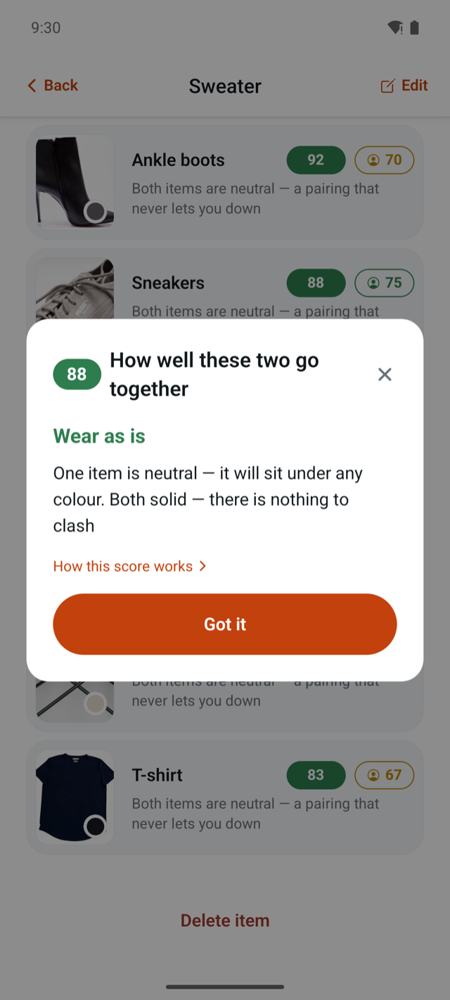
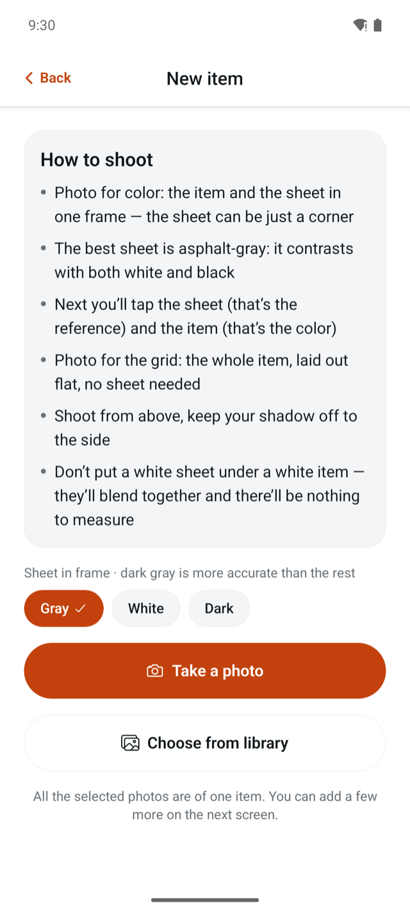
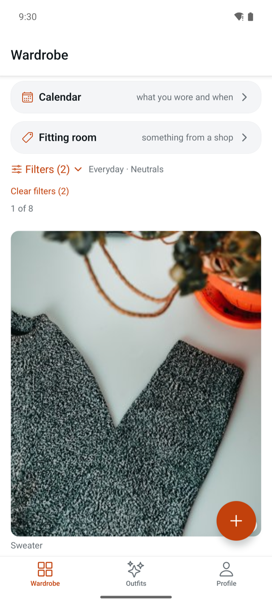
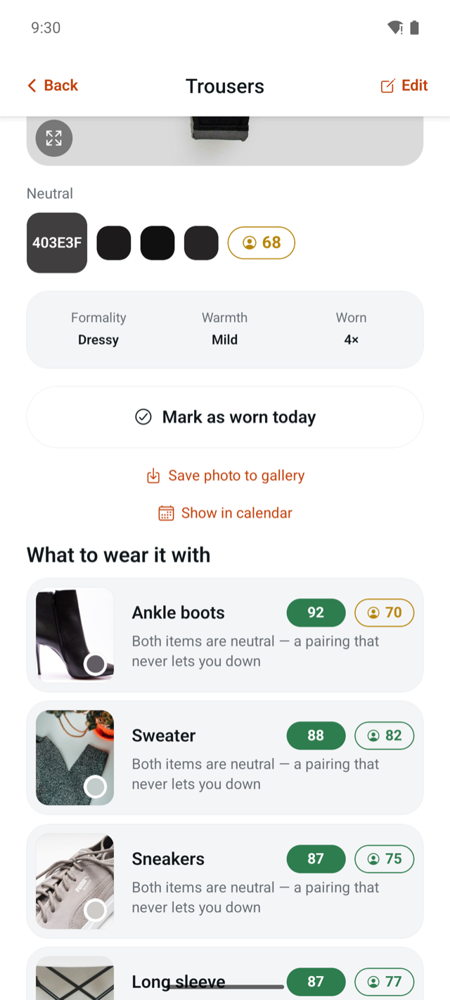
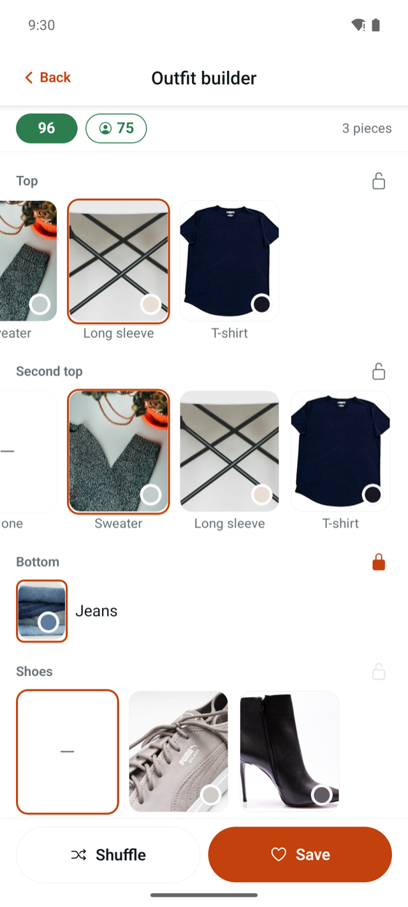
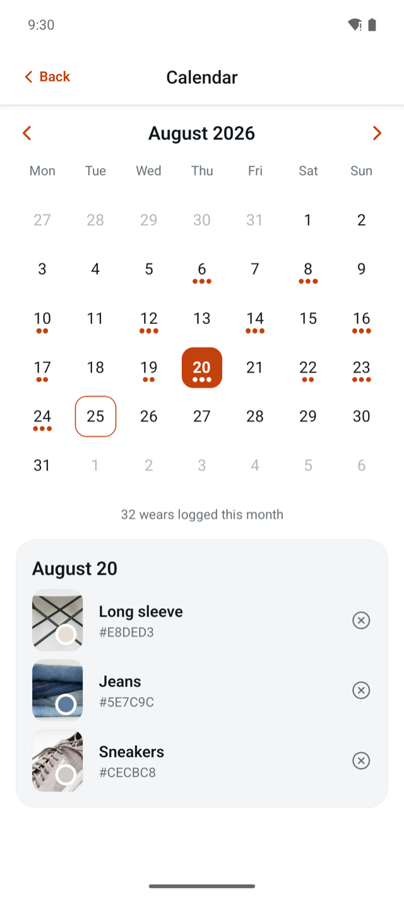
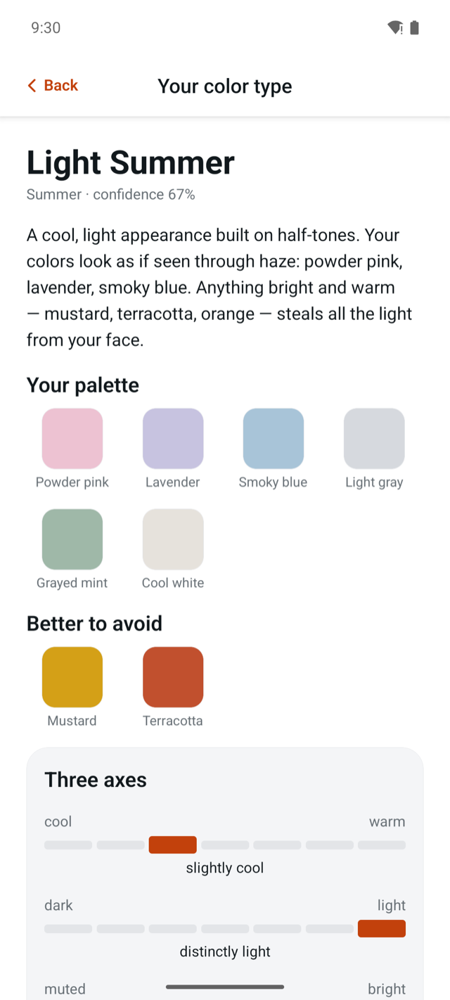
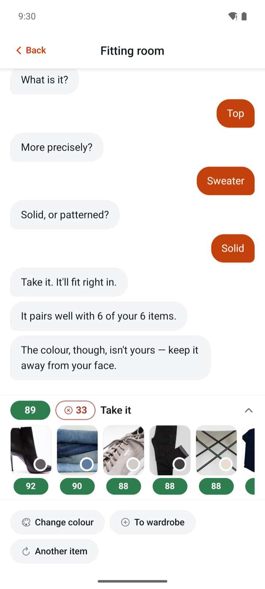

Ecru
Ecru catalogs what you own, builds outfits from it, and remembers what you wore. Every time it says two things go together, it tells you why — in one sentence.
No account · No server · Works in airplane mode

01 · Know what you own
Ecru has no idea what a cardigan looks like and never pretends otherwise. You lay the item on a sheet of paper, photograph both in one frame, then tap the sheet and tap the item. The sheet is the reference; the tap is the measurement. The category you pick yourself, from seven categories and fifty-six subcategories.
That costs about ninety seconds an item. Apps that cut the background with AI do it in three. What the other eighty-seven seconds buy you is a catalog that is right, and a color that was measured rather than guessed.
When the measurement fails, it says so: “Don’t put a white sheet under a white item — they’ll blend together and there’ll be nothing to measure.”


02 · Know what goes with what
What you usually get
92%
What Ecru gives you
Both items are neutral — a pairing that never lets you down
Tap a score anywhere in the app and it opens the reason for that particular pair. Not a generic explanation of the algorithm — the reason for those two items:
Four parts — color, occasion, season, pattern — weighted 0.45, 0.23, 0.20 and 0.12, and multiplied rather than added. The app puts it this way: “That is why the total follows the weakest part: a down jacket and linen shorts can match perfectly on colour and still not be an outfit.”
Hard vetoes work separately. A gap of three levels in warmth or occasion caps the score no matter how well the colors agree.

03 · Decide what to wear
The generator works through your wardrobe and hands back complete outfits, best score first. “Generate more” appends a new batch instead of wiping the last one. When the combinations run out, it says so rather than padding: “No new combinations found — you’ve exhausted your wardrobe. Add more items.”
Or build it yourself across six slots. Each slot only offers items that work with what you have already chosen — put on a dress and the Bottom and Second-layer slots disappear entirely, because nothing goes there. Lock a slot you like, tap Shuffle, and the rest reassembles around it.

04 · Remember what you wore
Tap “Worn today” on an item, or “Wearing it” on a whole outfit, and it goes into the log. The calendar shows the month with a dot on every day something was marked, a summary underneath, and the list of what you wore on the day you tap. Every item card carries its own wear count.
An empty day explains itself instead of sitting blank. Nothing here is gamified, scored, or turned into a streak.

05 · Know what suits you
Hair, eyes, skin, gold or silver, the veins at your wrist, how your skin takes the sun. Out comes one of twelve color types with its palette, its “better to avoid” list, three axes — warm to cool, dark to light, muted to bright — and an honest confidence percentage. If you sit between two types, it says so and shows you both.
In-person color analysis runs $200–800. This is a formula over six answers, and it tells you how sure it is instead of performing certainty. If it gets you wrong, you override it by hand and the override sticks.
It never reorders anything. In the app's own words: “Shown everywhere, but it never changes the order — a colour type is a convention, not a measurement.”

06 · And when you're standing in a shop
Item in your hands, queue for the fitting room, decision to make. Photograph it, confirm the color, answer three questions with buttons, and get a verdict measured against the wardrobe you actually own.
Hey! What are you trying on?
Take a photo of it and I'll tell you whether you have anything to wear it with.
What is it? → Top → Sweater → Solid
Take it. It'll fit right in.
It pairs well with 14 of your 15 items.
The colour isn't quite yours — better below the shoulders.
The verdict is the average of your five best pairs, not the single best one. One flattering pair exists for anything; averaging five means an item that works with exactly one pair of jeans does not get called a purchase. At least three pairs have to reach “goes together” before it says take it.
There is no free-text box, on purpose. The app has no network, so a “type anything” field would mean either a trip to the internet from the fitting room or a tree of canned replies that gives itself away on the third turn.

Not a privacy posture bolted on afterwards — the two architectural decisions that made everything above possible.
Color is arithmetic over pixels. Harmony is a color formula with published weights. That is exactly why it can explain itself in a sentence: there is a reason to read out.
No server, no account, no internet. Your wardrobe is SQLite on the phone and photographs in the app's own storage. There is no account to delete because there was never one to make.
You do the cataloging. In return nothing about your clothes, your face, or your habits is uploaded anywhere, and the app works in airplane mode because it never needed the plane's wifi.
Straight from the app's own settings screen: “Your wardrobe lives only on this phone. Deleting the app erases it along with the photos — ‘Save photo to gallery’ on an item screen is what leaves a copy outside the app.”
07 · What it doesn't do
08 · Questions
Yes. There is no server to talk to. Everything runs on the phone, and the app works with the network off.
No. There is no sign-up, no login, and no profile stored anywhere but on your device.
About ninety seconds for the first items, faster after that — picking a subcategory fills in formality and warmth for you.
Because a model that cuts out a background can't tell you why two things go together. The explanations on every score exist because the score is a formula, not a guess.
Tap the sheet to set the white point and the frame is recomputed from it — that is what rescues a shot taken under a yellow bulb. You can also pick the shade from a palette by hand, and lock it. In a shop, where there is no sheet, there is a “white is here” tap for a price tag or a wall.
Ukrainian, English, Polish, and Spanish. It follows your system language when that is one of the four, and you can switch it in the profile.
Your wardrobe goes with it, photographs included. That is the cost of having no server. “Save photo to gallery” on an item screen is the one thing that leaves a copy outside.
It is free, and there is no release date to promise yet. The waitlist gets one email when it is out.
No. Ecru here is the color of unbleached linen, which is what this app measures. It has no connection to any other company, brand, or app using the same word.
No newsletter, no drip sequence, no launch countdown.
No account · No server · Works in airplane mode